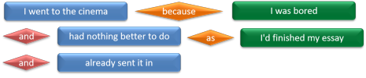
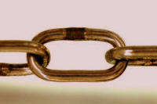

Complex sentences: the introduction

Note: if you don't know the difference between a subject and an
object or your complement from your elbow, it may be wise to follow
the guide to the basic components of a sentence which introduces
some fundamental concepts.
The other area you might like to cover before this guide is the one
on analysing phrase structures.
Both links open in new tabs.
This is called an introduction to complex sentences because there
are many ways in which clauses can be connected. They will not
all be covered here but there are links at the end to more specific
guides to some of the phenomena exemplified in what follows.
4 Types of sentences |
First of all, a little revision is in order.
There are 4 types of sentences represented by the examples below.
Can you identify them?
Click here when you have.
- I went to the cinema.
- I went to the cinema and I met John.
- I went to the cinema because I was bored.
- I went to the cinema because I was bored and had nothing better to do.
| Sentence type | What it is | Example | Comment |
| Simple | One noun and one (finite) verb | I went to the cinema. | This is a finite clause which can stand alone |
| Compound | Two clauses (or more) of equal importance | I went to the cinema and I met John. | Both
parts of a compound sentence can stand alone. Usually,
they are joined with something like and, or, but The conjunction is independent of either clause |
| Complex | Two clauses, one of which is subordinate (depends on) the other | I went to the cinema because I was bored. | The
second part of this is a subordinate clause: it cannot stand
alone and retain the same meaning If you move the clauses around, the conjunction moves with the subordinate clause |
| Compound-complex | A combination of the two | I went to the cinema because I was bored and had nothing better to do. | This
sentence has a main clause and two coordinated subordinate
clauses linked with and. These sorts of sentences are sometimes difficult for learners to unpack |
Note that this classification is one used in so-called traditional grammar. From other points of view, e.g., functional grammar, all sentences which consist of more than one clause may be defined as complex sentences (Lock, 1996:247). We retain the distinction here but it is not a necessary one for what follows.
The following examples show that compound and complex sentences are not, of course, confined to two or three clauses:
- I went to the cinema and met John but he was bored by the film so he left early.
- I went to the cinema because I was bored and had nothing better to do as I'd finished my essay and already sent it in.
In sentence 1. we have a compound of
went to the cinema
and
met John
This is followed by a further independent clause
he was bored
and a subordinate clause
so he left early.
In sentence 2., we have the independent clause
I went to the
cinema
followed by a subordinate clause
because I was
bored
and that has a further subordinate clause
as I'd
finished my essay
which is linked to another independent clause
and already sent it in
The final clause is incomplete because the subject and
auxiliary verb (I had) have been ellipted. We may do
this only if they apply to both clauses and only with coordinating
conjunctions.
Here's another way to understand it.
-
independent clauses are in blue boxes
-
dependent clauses are in green boxes
-
coordinating conjunctions are in red diamonds
-
subordinating conjunctions are in orange diamonds
| Sentence 1 | Sentence 2 |
 |
 |
An alternative representation of these sentences in which only coordinators are seen as independent elements is:
 |
And it is clear that the first sentence contains three
coordinated main clauses and one subordinate clause but the second
sentence contains one main clause which has two coordinated
subordinate clauses, one of which also has two coordinated
subordinate clauses.
This is by no means unusual and takes a little bit of unpacking to
understand the sense and what see depends on what.
Types of clause |
We have distinguished two clause types in the above:
- Independent clauses
- These are not dependent structurally on other clauses and
can stand alone, potentially, at least.
I went to the cinema
is perfectly comprehensible and the reason need not be given.
This sentence contains two independent clauses, highlighted in green:
I took the bus to the station and I just managed to catch the train
In a compound sentence such as this, the coordinating conjunction is not tied to one or other of the clauses so if we reverse the clauses it remains between them. There is however, often a semantic rather than syntactical reason for the ordering of the clauses.
We can reverse the clauses in:
I washed the car and cleaned the house
and make the sentence as:
I cleaned the house and washed the car
without making any real difference to the sense but we cannot do that with, for example:
She was tired and went home
without affecting the meaning because:
She went home and was tired
has a different sense.
The reason is that the conjunction here signals some kind of causal relationship between the events.
When two independent clauses are joined in this way, the subject is often omitted from the second clause so we allow, e.g.:
I took the bus to the station and just managed to catch the train
With coordinated clauses, we can also often ellipt other elements so we can also have:
I can's see it or hear it
in which the auxiliary verb and the subject are ellipted from the second clause.
For more on what can and cannot be ellipted, see the guide to conjunction, linked below. - Dependent clauses
- These are also called subordinate
clauses for the reason that they are structurally or
semantically dependent on
other clauses and cannot usually stand alone. Here's an
example with the dependent or subordinate clause highlighted in
blue:
When I came home I saw that the window was broken.
In spoken language, of course, a dependent clause can stand alone when the independent clause is understood. For example,
Why are you so late?
Because the bus broke down.
In complex sentences the conjunction is tied to the subordinated clause and moves with it when the ordering is reversed. We can reverse the ordering in
She came to the pub because she wanted to meet Mary
to have:
Because she wanted to meet Mary, she came to the pub
but the word because travels with the clause it introduces.
Similarly with our first example we can reverse the clauses and have
I saw that the window was broken when I came home.
and the subordinating conjunction, when, moves with the subordinate clause.
When we join an independent clause to a dependent clause it is not usually possible to omit the subject so we do not allow, e.g.:
* When I came home saw that the window was broken.
Quite frequently, however, for semantic and logical reasons rather than grammatical ones, it is not possible to reverse the clause ordering so, e.g.:
The train was late, so I missed my connection
cannot sensibly be rendered as
*So I missed my connection, the train was late
Types of connection: linking and binding |
If you are unsure about the difference between the various types of conjunction in English, follow the guide to conjunction on this site linked in the list of related guides at the end.
In traditional grammars conjunction is the name given to clausal connections. Here, we'll look at things from a slightly different, functional, angle and distinguish between linking and binding.
|  |
Linking |
When two clauses are equal, they can be linked. Here are some examples with the link highlighted in red.
- Stop nagging ; I'll do it tomorrow.
- You can stay here with me or you can go with your father.
- He gave it to me because I wanted it and he had no use for it.
- While I was walking the dog and thinking about the day ahead, I ran into an old friend.
The rule is simple:
For linking to occur, both
clauses must be either independent or dependent.
In examples 1
and 2 the clauses are both independent.
In 3 and 4, they are
both dependent. The main clauses in those sentences are He
gave it to me and I ran into an old friend
respectively.
We can use punctuation, e.g., a semi-colon or dash, to link or we can employ a conjunction. There are examples of both above.
Sequencing linked clauses
Sometimes, the clauses can be reversed without changing the
meaning. In sentence 3, for example, there is little
difference if we say
He gave it to me because I wanted it and
he had no use for
it
or
He gave it to me because he had no use for
it and I wanted it.
You can see that and clearly belongs to neither clause because it remains between
them when they are reversed. That is a defining
characteristic of a coordinating conjunction, but not the only one.
At other times ordering is important either because:
- There is a logical chronological relationship which is
disturbed by moving clauses around.
I went home and had a long, hot bath.
is not at all the same as
I had a long hot bath and went home. - There is an implied causal relationship.
I was angry and walked out in a huff.
is not the same as
I walked out in a huff and was angry.
Subject omission in linked clauses
In linked clauses, we have a frequent example of the omission of
the subject. If the subject of the verbs in both clauses is
unchanged, it can be omitted.
I went out and I caught the bus
means the same as
I
went out and caught the bus.
This cannot happen if we change the subject of the clauses so, in:
I went out and she stayed at home
we cannot omit the second subject without changing the meaning
radically.
Auxiliary omission in linked clauses
By the same token, we can ellipt the auxiliary verb (whether it is
modal or primary) providing it applies to both verbs. In these
examples, the subject is also omitted because it applies to both
verb phrases.
I must do my homework and clean the flat
I had washed the car and put it in the garage
 |
Binding |
When clauses are unequal, they are connected by binding.
The simplest example is when we have an independent and dependent clause such as:
- The room was a mess because I'd been too busy to clear up.
- When I'd finished, it looked a lot better.
In which the main clauses are The room was a mess and it looked a lot better respectively.
Sequencing in bound clauses
Reversing the clauses is possible:
- Because I'd been too busy to clear up, the room was a mess.
- It looked a lot better when I'd finished.
However, when clauses are linked in this way the conjunction moves with the clause. That is to say it is part of it. That is a defining characteristic of subordinating conjunctions.
Sequencing can be even more flexible with the dependent clause embedded in the independent clause:
- Although not a good one, the idea was accepted by the board.
- The idea, although not a good one, was accepted by the board.
We can also have sentences in which a dependent clause has its own dependent clause. This frequently occurs when causal relationships or relative clauses are used. For example,
- The room was a mess because I'd been too busy to clear up while I'd been working.
- I went to the cinema in the next town because it was the only one which was showing the film that I wanted to see.
Binding without conjunctions
If you have followed the guide to conjunction, you'll be familiar with the range of subordinating (and other) conjunctions used to bind independent and dependent (or subordinate) clauses. However, there are other ways to bind clauses together. For example
- Had you asked, I would have helped.
- By taking a taxi, I managed not to be late.
- Arriving at the meeting, I saw that lots of people were going to be late.
- The meeting which I attended was not very useful.
In 9, it is word order alone which connects the ideas and the
contingent conjunction (if, supposing etc.) has been
ellipted.
In 10, the use of the preposition by and a non-finite participle,
taking,
connects the ideas.
In 11, the non-finite participle alone is enough.
In 12, we have a relative pronoun to connect the clauses.
Subject omission in bound clauses
In linked clauses, we can omit the subject of the second clause
if it is the same for both verbs as we saw above.
This is not
usually the case with bound clauses even when the subject
remains unaltered. We can have:
I had worked hard so that I could leave early
but we do not allow:
*I had worked hard so that could leave early
and we allow:
She did the work because she needed the money
but not
*She did the work because needed the money.
With some subordinating conjunctions, however, subject omission
is allowable so we may have:
Although exhausted, she worked on
Nevertheless, including the subject and the verb in both
clauses is never wrong and often the only correct alternative.
 |
Catenation, modification, compounding and listing |
There are separate guides to catenative (i.e., joined together in a series) verbs and modification on this site, linked in the list of related guides at the end so only brief mention will be made here. Here's an example:
HYDROUSA intends to set
up, demonstrate and optimize innovative on-site nature-based
solutions to recover fresh water, nutrients and energy from
wastewater, rainwater, groundwater, atmospheric water vapor and
seawater to produce marketable products.
http://www.ekathimerini.com/230601/article/ekathimerini/business/circular-water-economy-introduced-on-greek-islands
There's no doubt that this is a complex sentence but complexity is being achieved in four separate ways:
- Pre-and post-modification of noun phrases
- on-site nature-based + solutions
- energy + from wastewater, rainwater, groundwater, atmospheric water vapor and seawater
- marketable + products
- Verb listing
- set up, demonstrate and optimize
- Compounding
- adjectives: on-site, nature-based
- nouns: wastewater, rainwater, groundwater, seawater
- Catenation
- the first verb intend is catenated with the three which follow to set up, demonstrate and optimize
- those three verbs are all catenated with the infinitive to recover
- the verb recover is not catenated with the second infinitive to produce because the to in this case is actually just a shortened form of the complex subordinator in order to
When four different ways of making complexity are used together in this way it becomes quite hard for learners of the language to extract the core meaning.
 |
Problems for learners (and teachers) |
Given and new information
There is a tendency in English to end-focus new information, i.e., to place new information after old. For example,
- I finished my essay and went to meet my friends.
- When I had finished my essay, I went to meet my friends.
- I went to meet my friends when I had finished my essay.
What problems can you see here? Click when you have an answer.
In 1, a sentence of two equal independent
clauses, both bits of information are given equal weight. However, the clauses cannot
sensibly be reversed because there is a chronological sequence.
In 2, a dependent clause is followed by an
independent clause. The writing of the essay is assumed to be known to the
hearer / reader, and the new information, taking the recount
forward, follows this.
In 3, the key information is the timing of meeting friends.
The fact that it did not occur until the essay was finished is the
important new information.
If learners are unaware of this
phenomenon, they will often produce language which is unnatural or
difficult to follow.
Raising awareness of end-focus is
important.
Conjunct vs. conjunction
What's gone wrong here? Click when you have an answer.
- *I went to the cinema therefore I missed your call.
- *I was in London because of this I was able to see the exhibition.
- *He came to the meeting additionally so did Mary.
Many languages do not handle the
distinction between conjuncts, which lie outside the clause
structure, and subordinating conjunctions, which lie within the clause, in the
same way as English.
In 1, therefore is a conjunct and the sentence should be
rephrased either as two sentences:
I went to the cinema.
Therefore, I missed your call
or by using a real subordinating conjunction:
I
went to the cinema so I missed your call.
Similarly, in sentences 2 and 3, the learner has tried to use
conjuncts, because of this and additionally, as if
they were conjunctions. The result is syntactically flawed.
Again, the sentences need to be rephrased and this can be done by making two separate sentences, linked by the
conjuncts:
I was in London. Because of this, I was
able to see the exhibition
and
He came to the meeting. Additionally,
so did Mary
Alternatively, the links need to be made with conjunctions:
I was in London so I was able to see the
exhibition
I was able to see the exhibition because I was in London
He came to the meeting and so did Mary
Conjuncts often seem a good deal more formal, especially in spoken
texts.
For more about conjuncts, refer to
the guide
to adverbials or that to conjuncts only on this site linked in the list of related guides at the end.
Repeated conjunctions
Some languages (e.g., most Chinese languages) mark the relationships between clauses twice and
speakers of those language may produce sentences such as
Because I was in London so I could meet her.
Although it was hot but he wore a coat.
Finite and non-finite verb forms
What has gone wrong here? Click here when you have an answer.
- In order that getting to school on time he got up early.
- He worked hard so that making a lot of money.
- In spite of he worked so hard, he made very little money.
- Without I had a satnav I would have been lost.
There are three problem issues. Languages vary in this and it is unsurprising that the forms cause serious difficulty:
- The conjunctions as,
wherever, because, in order that, so that and as long as
must be used with finite verb clauses. Sentence 1 is as
example of using in order that with a non-finite verb form and it's
wrong. It is correct to use in order to with a non-finite verb
form but that must be an infinitive.
We can have, for example:
I came because I enjoy parties
but not
*I came because enjoying parties. - Other conjunctions, such as
while, since, until, although
etc. can be used with finite and non-finite verb
phrases. We can have, for example:
Although she arrived late, she was soon at work
and
Although arriving late, she was soon at work.
I saw him while I was getting off the bus
and
I saw him while getting off the bus.
The guide to subordination, linked below, has more on this with greater exemplification. - Prepositions, such as
in, by, without, despite, in spite of, as a result of,
so as
etc., can only be used with
non-finite verbs.
We can have, for example:
By opening the window he managed to escape
but not
*By he opened the window he managed to escape.
and
As a result of drinking too much, he forgot to ask her name
but not
*As a result of he drank too much he forgot to ask her name.
The complex subordinators in order to and so as to can only be followed by an infinitive. Both function as subordinating conjunctions in this respect, akin to because. The difference is that conjunctions proper (because, so etc.) must be followed by a finite clause. So we can have:
I hurried (in order) to catch the train
I hurried so as to catch the train
but we do not allow:
*I hurried because to catch the train
*I hurried so to catch the train
The other prepositions, in, by, without, despite, in spite of and as a result of also subordinate in the same way as conjunctions but are followed by a noun phrase or a non-finite -ing form of the verb.
Non-finite verbs can appear without subjects so learners may not
know when they are needed and produce, e.g.,
While waiting
for my money, the man spoke to me.
in which it is not clear who
exactly was waiting for my money.
The issues here is that we have what is called a dangling
participle and we are unsure of the intended subject of the
verb.
A more obvious example is:
While getting on the bus my wallet fell
out of my pocket
which makes it appear that my wallet rather than I
was getting on the bus.
There is an answer to a user's question about dangling
participles which you can access via the link to Language
questions on the left.
There is a guide to finite and non-finite verb forms on this site linked in the list below.
Click here to take a test on this.
This guide's title includes the word introduction because it has not covered many other aspects of complexity in sentence construction. The following are all concerned in one way or another with compound or complex sentences.
| Related guides: | |
| relative pronoun clauses | a guide to how relative pronoun clauses are constructed with considerations of the pronouns we use |
| conjunction | a guide to explain the main sorts of conjunction and distinguish subordinators from coordinators |
| subordination | a guide which extends some of the considerations of binding here |
| coordination | a guide to consider this kind of linking only |
| adverbials | for more on the distinction between a conjunct and a conjunction |
| conjuncts | for the guide which only considers this kind of adverbial |
| finite and non-finite verb forms | for more on this critical distinction |
| cleft sentences | a guide to it-, wh- and other forms of cleft sentences with two verbs |
| fronting | a guide to how moving items to the front of sentences of all kinds can be done for emphasis and the effect on structures which follow |
| relative adverb clauses | a guide to how relative adverbs expressing when, where and how work |
| indirect questions | a guide to reporting or embedding questions |
| modification | an overview of modification with links to specific types |
| catenative verbs | for a guide to how strings of verbs may be used in clauses to attain a level of complexity |
| negation | a guide to a complex and sometimes odd set of phenomena in English included transferred negation and inversion |
Reference:
Lock, G, 1996, Functional English Grammar, Cambridge:
Cambridge University Press